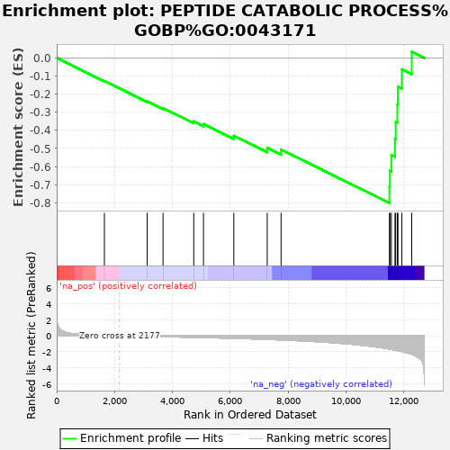

| | | Dataset | rankInfo |
| Phenotype | NoPhenotypeAvailable |
| Upregulated in class | na_neg |
| GeneSet | PEPTIDE CATABOLIC PROCESS%GOBP%GO:0043171 |
| Enrichment Score (ES) | -0.8016681 |
| Normalized Enrichment Score (NES) | -1.6922485 |
| Nominal p-value | 0.001019368 |
| FDR q-value | 0.0013932575 |
| FWER p-Value | 0.073 |
Table: GSEA Results Summary

Fig 1: Enrichment plot: PEPTIDE CATABOLIC PROCESS%GOBP%GO:0043171
Profile of the Running ES Score & Positions of GeneSet Members on the Rank Ordered List
| SYMBOL | RANK IN GENE LIST | RANK METRIC SCORE | RUNNING ES | CORE ENRICHMENT | | 1 | GGT1 | 1650 | 0.043 | -0.1276 | No |
| 2 | NAALADL1 | 3129 | -0.069 | -0.2402 | No |
| 3 | CHAC2 | 3678 | -0.110 | -0.2775 | No |
| 4 | ADAMTS13 | 4740 | -0.192 | -0.3506 | No |
| 5 | CTSH | 5077 | -0.221 | -0.3652 | No |
| 6 | ECE1 | 6126 | -0.320 | -0.4304 | No |
| 7 | GGT7 | 7281 | -0.450 | -0.4970 | No |
| 8 | XPNPEP1 | 7760 | -0.519 | -0.5066 | No |
| 9 | LTA4H | 11509 | -1.655 | -0.7124 | Yes |
| 10 | CPQ | 11524 | -1.661 | -0.6238 | Yes |
| 11 | ERAP1 | 11575 | -1.695 | -0.5363 | Yes |
| 12 | ANPEP | 11700 | -1.797 | -0.4491 | Yes |
| 13 | IDE | 11725 | -1.812 | -0.3532 | Yes |
| 14 | LNPEP | 11782 | -1.851 | -0.2577 | Yes |
| 15 | ERAP2 | 11803 | -1.866 | -0.1586 | Yes |
| 16 | NPEPPS | 11937 | -1.968 | -0.0628 | Yes |
| 17 | TPP1 | 12280 | -2.303 | 0.0345 | Yes |
Table: GSEA details [plain text format]
Fig 2: PEPTIDE CATABOLIC PROCESS%GOBP%GO:0043171: Random ES distribution
Gene set null distribution of ES for PEPTIDE CATABOLIC PROCESS%GOBP%GO:0043171